2026 Higher Biology - Paper 1 questions
Source: Scottish Qualifications Authority (SQA) / Qualifications Scotland. This is a StemInteract HTML companion, not an official HTML edition. Selectable text is supplied alongside original page images. Use the images or original PDF for equations, powers, fractions, vector notation, tables and diagrams; text extraction cannot fully preserve mathematical layout.
Jump to a question
PDF page 1
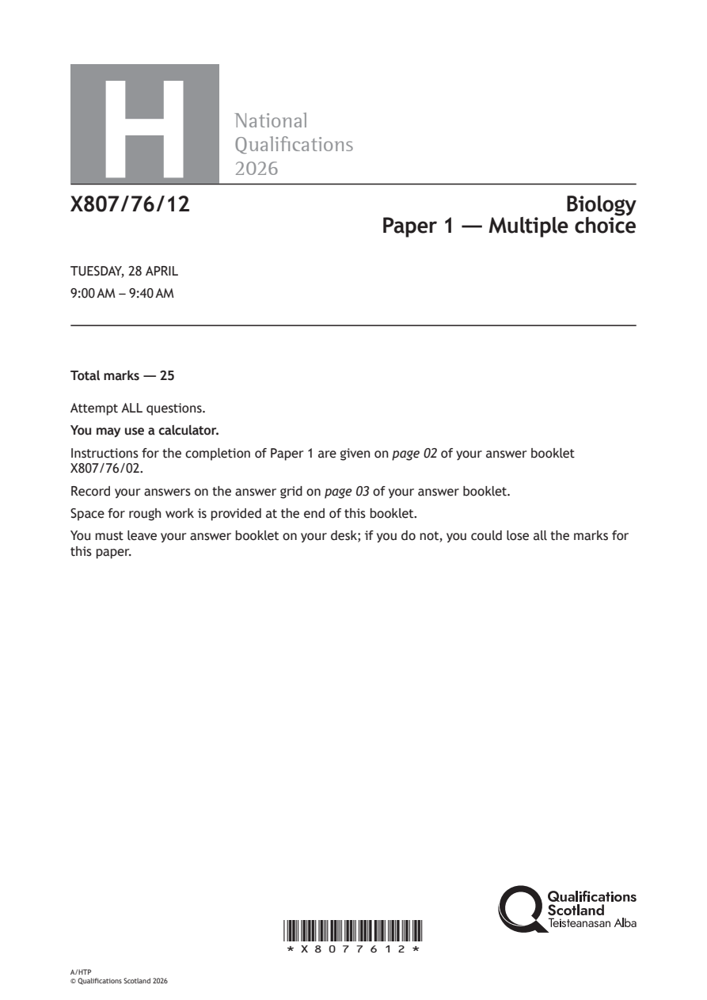
Selectable page text
H
National
Qualications
2026
X807/76/12 Biology
Paper 1 — Multiple choice
TUESDAY, 28 APRIL
9:00 AM – 9:40 AM
Total marks — 25
Attempt ALL questions.
You may use a calculator.
Instructions for the completion of Paper 1 are given on page 02 of your answer booklet
X807/76/02.
Record your answers on the answer grid on page 03 of your answer booklet.
Space for rough work is provided at the end of this booklet.
You must leave your answer booklet on your desk; if you do not, you could lose all the marks for
this paper.
*X8077612*
A/HTP
© Qualifications Scotland 2026PDF page 2
Paper 1, Question 1Paper 1, Question 2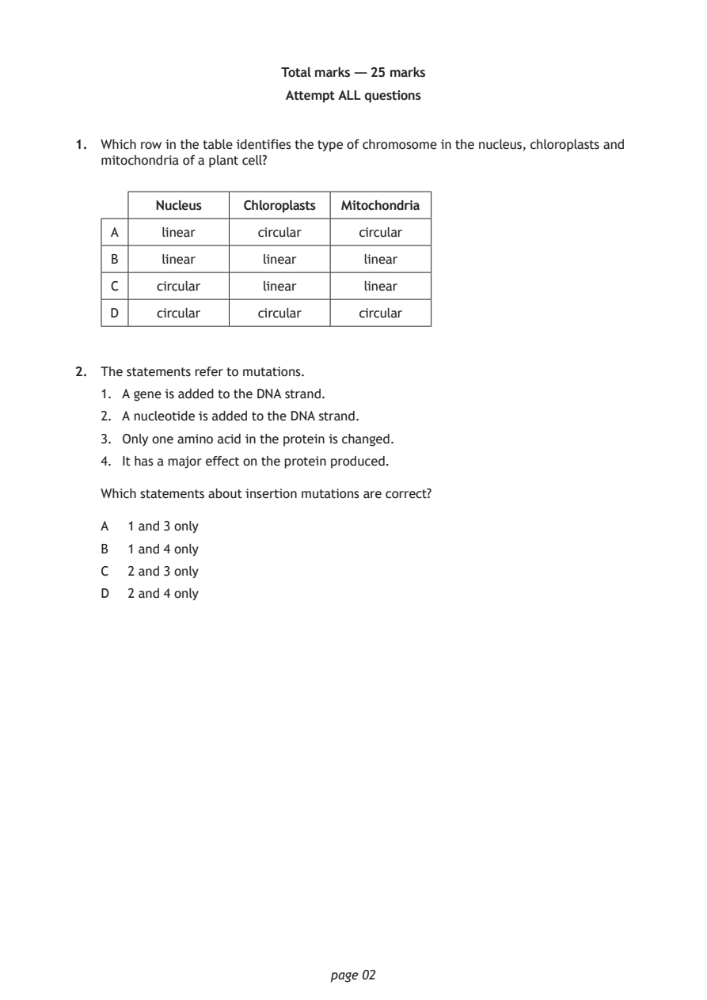
Selectable page text
Total marks — 25 marks
Attempt ALL questions
1. Which row in the table identifies the type of chromosome in the nucleus, chloroplasts and
mitochondria of a plant cell?
Nucleus Chloroplasts Mitochondria
A linear circular circular
B linear linear linear
C circular linear linear
D circular circular circular
2. The statements refer to mutations.
1. A gene is added to the DNA strand.
2. A nucleotide is added to the DNA strand.
3. Only one amino acid in the protein is changed.
4. It has a major effect on the protein produced.
Which statements about insertion mutations are correct?
A 1 and 3 only
B 1 and 4 only
C 2 and 3 only
D 2 and 4 only
page 02PDF page 3
Paper 1, Question 3Paper 1, Question 4Paper 1, Question 5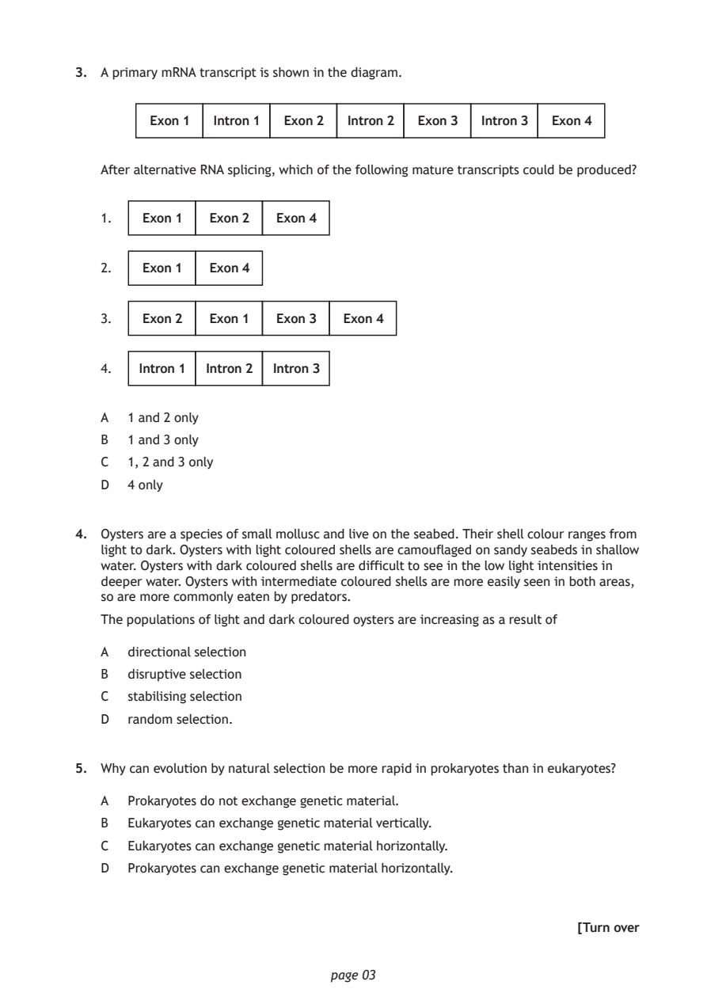
Selectable page text
3. A primary mRNA transcript is shown in the diagram.
Exon 1 Intron 1 Exon 2 Intron 2 Exon 3 Intron 3 Exon 4
After alternative RNA splicing, which of the following mature transcripts could be produced?
1. Exon 1 Exon 2 Exon 4
2. Exon 1 Exon 4
3. Exon 2 Exon 1 Exon 3 Exon 4
4. Intron 1 Intron 2 Intron 3
A 1 and 2 only
B 1 and 3 only
C 1, 2 and 3 only
D 4 only
4. Oysters are a species of small mollusc and live on the seabed. Their shell colour ranges from
light to dark. Oysters with light coloured shells are camouflaged on sandy seabeds in shallow
water. Oysters with dark coloured shells are difficult to see in the low light intensities in
deeper water. Oysters with intermediate coloured shells are more easily seen in both areas,
so are more commonly eaten by predators.
The populations of light and dark coloured oysters are increasing as a result of
A directional selection
B disruptive selection
C stabilising selection
D random selection.
5. Why can evolution by natural selection be more rapid in prokaryotes than in eukaryotes?
A Prokaryotes do not exchange genetic material.
B Eukaryotes can exchange genetic material vertically.
C Eukaryotes can exchange genetic material horizontally.
D Prokaryotes can exchange genetic material horizontally.
[Turn over
page 03PDF page 4
Paper 1, Question 6Paper 1, Question 7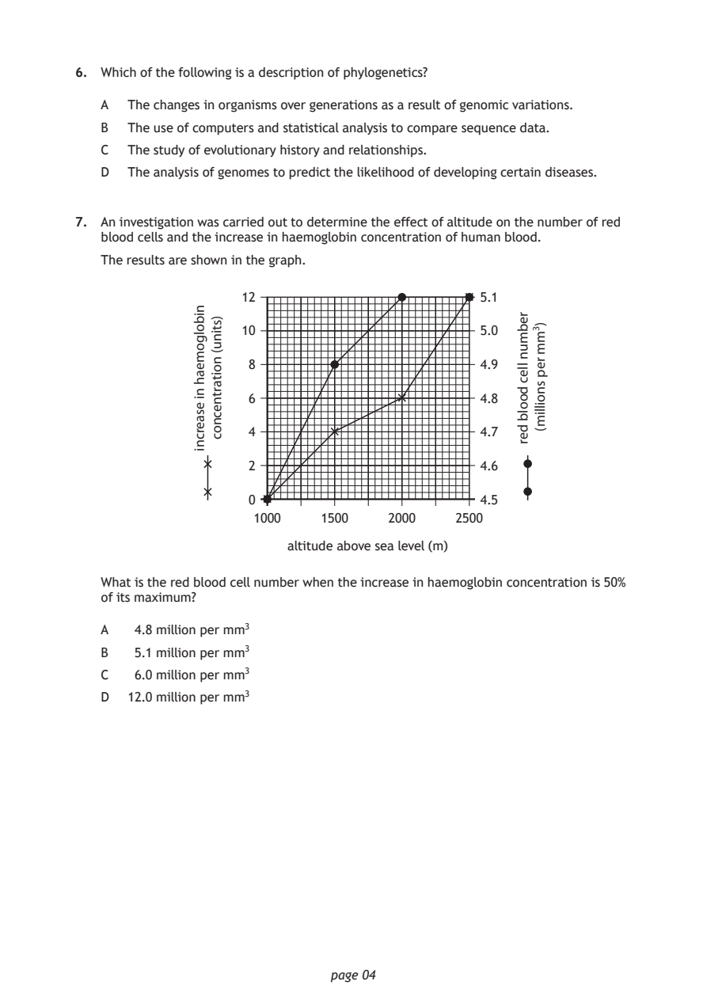
Selectable page text
6. Which of the following is a description of phylogenetics?
A The changes in organisms over generations as a result of genomic variations.
B The use of computers and statistical analysis to compare sequence data.
C The study of evolutionary history and relationships.
D The analysis of genomes to predict the likelihood of developing certain diseases.
7. An investigation was carried out to determine the effect of altitude on the number of red
blood cells and the increase in haemoglobin concentration of human blood.
The results are shown in the graph.
12 5.1
10 5.0
8 4.9
6 4.8
4 4.7
2 4.6
0 4.5
altitude above sea level (m)
page 04
nibolgomeah
ni
esaercni
)stinu(
noitartnecnoc
rebmun
llec
doolb
der
)3mm
rep
snoillim(
1000 1500 2000 2500
What is the red blood cell number when the increase in haemoglobin concentration is 50%
of its maximum?
A 4.8 million per mm³
B 5.1 million per mm³
C 6.0 million per mm³
D 12.0 million per mm³PDF page 5
Paper 1, Question 8Paper 1, Question 9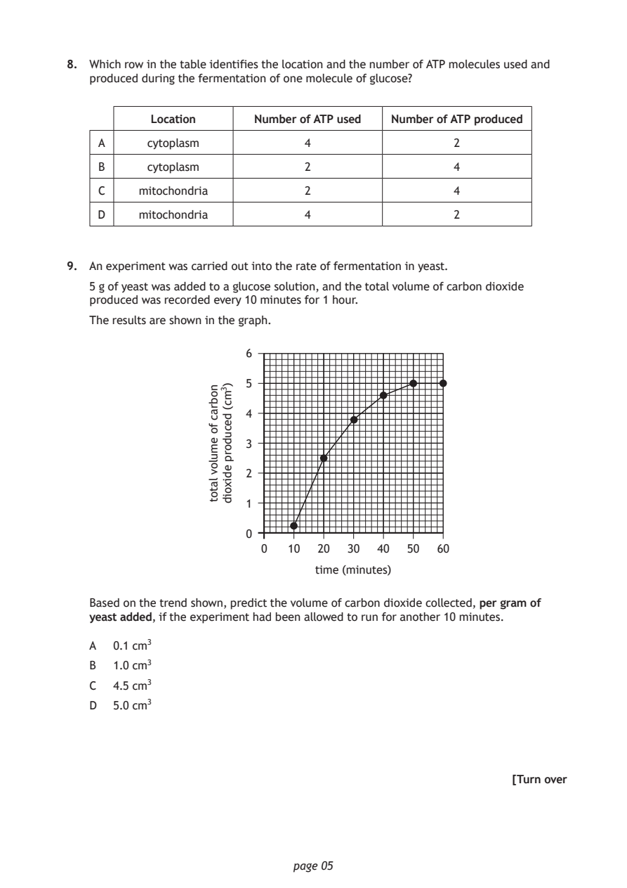
Selectable page text
8. Which row in the table identifies the location and the number of ATP molecules used and
produced during the fermentation of one molecule of glucose?
Location Number of ATP used Number of ATP produced
A cytoplasm 4 2
B cytoplasm 2 4
C mitochondria 2 4
D mitochondria 4 2
9. An experiment was carried out into the rate of fermentation in yeast.
5 g of yeast was added to a glucose solution, and the total volume of carbon dioxide
produced was recorded every 10 minutes for 1 hour.
The results are shown in the graph.
0 10 20 30 40 50 60
time (minutes)
page 05
nobrac
fo
emulov
latot
)3mc(
decudorp
edixoid
6
5
4
3
2
1
0
Based on the trend shown, predict the volume of carbon dioxide collected, per gram of
yeast added, if the experiment had been allowed to run for another 10 minutes.
A 0.1 cm³
B 1.0 cm³
C 4.5 cm³
D 5.0 cm³
[Turn overPDF page 6
Paper 1, Question 10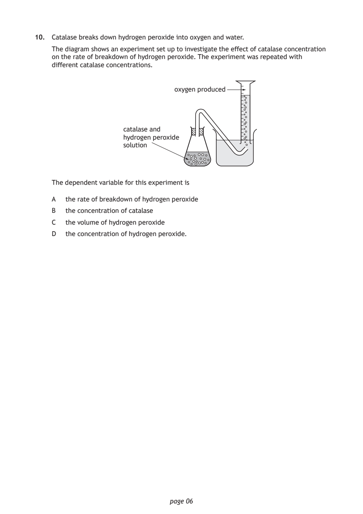
Selectable page text
10. Catalase breaks down hydrogen peroxide into oxygen and water.
The diagram shows an experiment set up to investigate the effect of catalase concentration
on the rate of breakdown of hydrogen peroxide. The experiment was repeated with
different catalase concentrations.
oxygen produced
catalase and
hydrogen peroxide
solution
The dependent variable for this experiment is
A the rate of breakdown of hydrogen peroxide
B the concentration of catalase
C the volume of hydrogen peroxide
D the concentration of hydrogen peroxide.
page 06PDF page 7
Paper 1, Question 11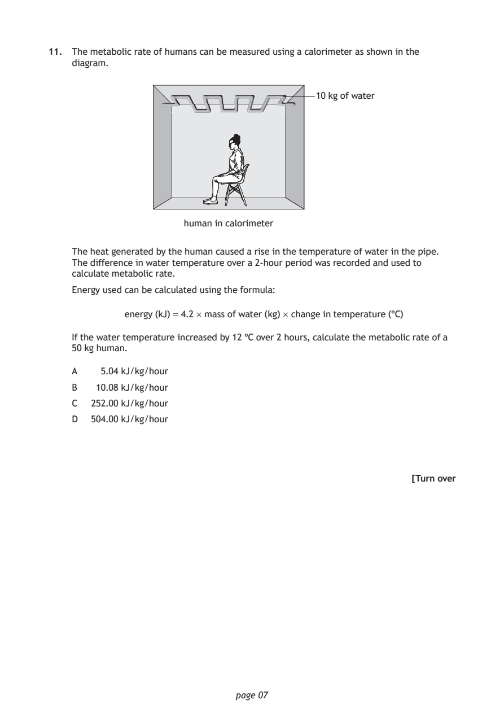
Selectable page text
11. The metabolic rate of humans can be measured using a calorimeter as shown in the
diagram.
10 kg of water
human in calorimeter
The heat generated by the human caused a rise in the temperature of water in the pipe.
The difference in water temperature over a 2‑hour period was recorded and used to
calculate metabolic rate.
Energy used can be calculated using the formula:
energy (kJ) = 4.2 × mass of water (kg) × change in temperature (°C)
If the water temperature increased by 12 °C over 2 hours, calculate the metabolic rate of a
50 kg human.
A 5.04 kJ/kg/hour
B 10.08 kJ/kg/hour
C 252.00 kJ/kg/hour
D 504.00 kJ/kg/hour
[Turn over
page 07PDF page 8
Paper 1, Question 12Paper 1, Question 13Paper 1, Question 14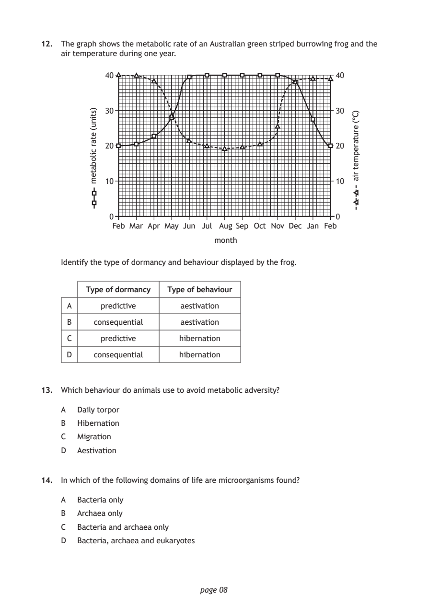
Selectable page text
12. The graph shows the metabolic rate of an Australian green striped burrowing frog and the
air temperature during one year.
40
30
20
10
0
Feb Mar Apr May Jun Jul Aug Sep Oct Nov Dec Jan Feb
month
page 08
)stinu(
etar
cilobatem
40
30
20
10
0
)C°(
erutarepmet
ria
Identify the type of dormancy and behaviour displayed by the frog.
Type of dormancy Type of behaviour
A predictive aestivation
B consequential aestivation
C predictive hibernation
D consequential hibernation
13. Which behaviour do animals use to avoid metabolic adversity?
A Daily torpor
B Hibernation
C Migration
D Aestivation
14. In which of the following domains of life are microorganisms found?
A Bacteria only
B Archaea only
C Bacteria and archaea only
D Bacteria, archaea and eukaryotesPDF page 9
Paper 1, Question 15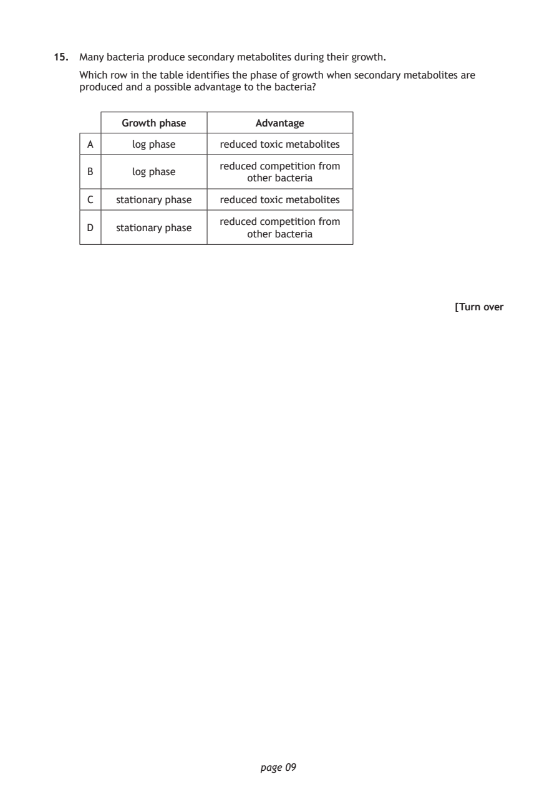
Selectable page text
15. Many bacteria produce secondary metabolites during their growth.
Which row in the table identifies the phase of growth when secondary metabolites are
produced and a possible advantage to the bacteria?
Growth phase Advantage
A log phase reduced toxic metabolites
reduced competition from
B log phase
other bacteria
C stationary phase reduced toxic metabolites
reduced competition from
D stationary phase
other bacteria
[Turn over
page 09PDF page 10
Paper 1, Question 16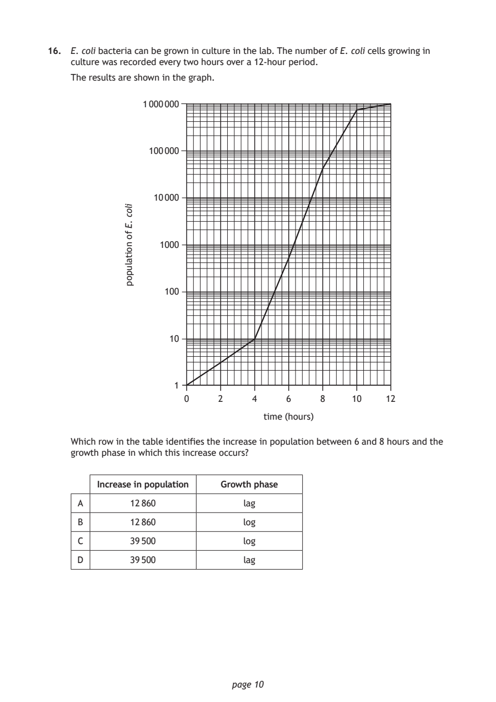
Selectable page text
16. E. coli bacteria can be grown in culture in the lab. The number of E. coli cells growing in
culture was recorded every two hours over a 12‑hour period.
The results are shown in the graph.
1 000 000
100 000
10 000
1000
100
10
1
page 10
iloc
.E
fo
noitalupop
0 2 4 6 8 10 12
time (hours)
Which row in the table identifies the increase in population between 6 and 8 hours and the
growth phase in which this increase occurs?
Increase in population Growth phase
A 12 860 lag
B 12 860 log
C 39 500 log
D 39 500 lagPDF page 11
Paper 1, Question 17Paper 1, Question 18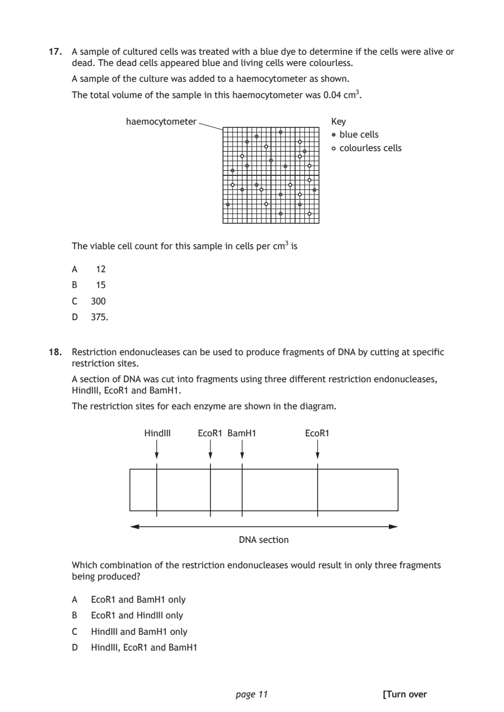
Selectable page text
17. A sample of cultured cells was treated with a blue dye to determine if the cells were alive or
dead. The dead cells appeared blue and living cells were colourless.
A sample of the culture was added to a haemocytometer as shown.
The total volume of the sample in this haemocytometer was 0.04 cm³.
haemocytometer Key
blue cells
colourless cells
The viable cell count for this sample in cells per cm³ is
A 12
B 15
C 300
D 375.
18. Restriction endonucleases can be used to produce fragments of DNA by cutting at specific
restriction sites.
A section of DNA was cut into fragments using three different restriction endonucleases,
HindIII, EcoR1 and BamH1.
The restriction sites for each enzyme are shown in the diagram.
HindIII EcoR1 BamH1 EcoR1
DNA section
Which combination of the restriction endonucleases would result in only three fragments
being produced?
A EcoR1 and BamH1 only
B EcoR1 and HindIII only
C HindIII and BamH1 only
D HindIII, EcoR1 and BamH1
page 11 [Turn overPDF page 12
Paper 1, Question 19Paper 1, Question 20Paper 1, Question 21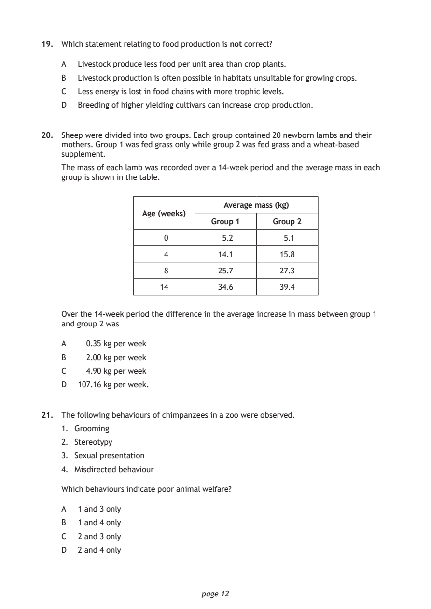
Selectable page text
19. Which statement relating to food production is not correct?
A Livestock produce less food per unit area than crop plants.
B Livestock production is often possible in habitats unsuitable for growing crops.
C Less energy is lost in food chains with more trophic levels.
D Breeding of higher yielding cultivars can increase crop production.
20. Sheep were divided into two groups. Each group contained 20 newborn lambs and their
mothers. Group 1 was fed grass only while group 2 was fed grass and a wheat‑based
supplement.
The mass of each lamb was recorded over a 14‑week period and the average mass in each
group is shown in the table.
Average mass (kg)
Age (weeks)
Group 1 Group 2
0 5.2 5.1
4 14.1 15.8
8 25.7 27.3
14 34.6 39.4
Over the 14‑week period the difference in the average increase in mass between group 1
and group 2 was
A 0.35 kg per week
B 2.00 kg per week
C 4.90 kg per week
D 107.16 kg per week.
21. The following behaviours of chimpanzees in a zoo were observed.
1. Grooming
2. Stereotypy
3. Sexual presentation
4. Misdirected behaviour
Which behaviours indicate poor animal welfare?
A 1 and 3 only
B 1 and 4 only
C 2 and 3 only
D 2 and 4 only
page 12PDF page 13
Paper 1, Question 22Paper 1, Question 23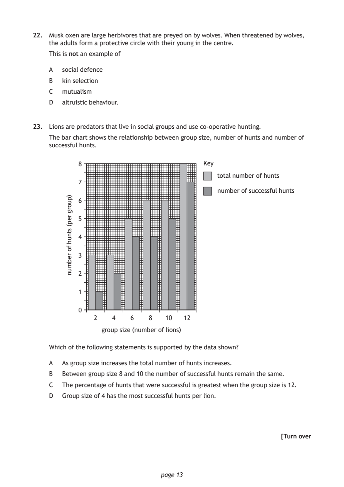
Selectable page text
22. Musk oxen are large herbivores that are preyed on by wolves. When threatened by wolves,
the adults form a protective circle with their young in the centre.
This is not an example of
A social defence
B kin selection
C mutualism
D altruistic behaviour.
23. Lions are predators that live in social groups and use co‑operative hunting.
The bar chart shows the relationship between group size, number of hunts and number of
successful hunts.
group size (number of lions)
page 13
)puorg
rep(
stnuh
fo
rebmun
8 Key
total number of hunts
7
number of successful hunts
6
5
4
3
2
1
0
2 4 6 8 10 12
Which of the following statements is supported by the data shown?
A As group size increases the total number of hunts increases.
B Between group size 8 and 10 the number of successful hunts remain the same.
C The percentage of hunts that were successful is greatest when the group size is 12.
D Group size of 4 has the most successful hunts per lion.
[Turn overPDF page 14
Paper 1, Question 24Paper 1, Question 25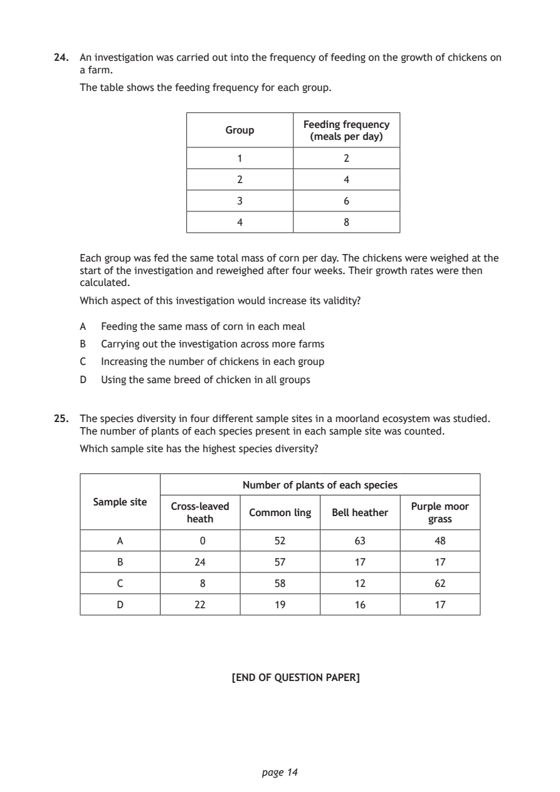
Selectable page text
24. An investigation was carried out into the frequency of feeding on the growth of chickens on
a farm.
The table shows the feeding frequency for each group.
Feeding frequency
Group
(meals per day)
1 2
2 4
3 6
4 8
Each group was fed the same total mass of corn per day. The chickens were weighed at the
start of the investigation and reweighed after four weeks. Their growth rates were then
calculated.
Which aspect of this investigation would increase its validity?
A Feeding the same mass of corn in each meal
B Carrying out the investigation across more farms
C Increasing the number of chickens in each group
D Using the same breed of chicken in all groups
25. The species diversity in four different sample sites in a moorland ecosystem was studied.
The number of plants of each species present in each sample site was counted.
Which sample site has the highest species diversity?
Number of plants of each species
Sample site
Cross‑leaved Purple moor
Common ling Bell heather
heath grass
A 0 52 63 48
B 24 57 17 17
C 8 58 12 62
D 22 19 16 17
[END OF QUESTION PAPER]
page 14PDF page 15
Selectable page text
SPACE FOR ROUGH WORK
page 15PDF page 16

Selectable page text
SPACE FOR ROUGH WORK
page 16